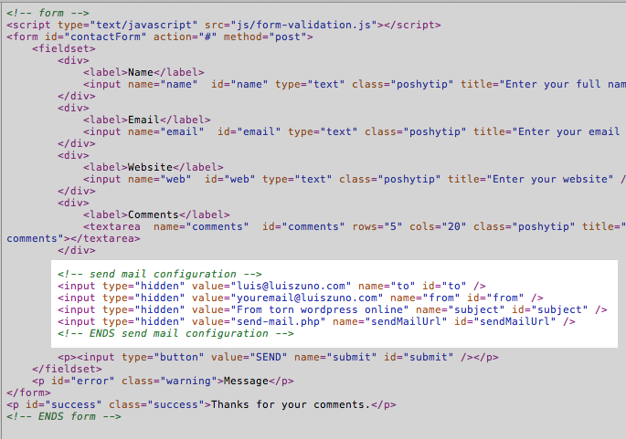

Descriptiontop
Resume is a one page HTML 5 template and responsive made using the twitter bootstrap . View the online demo
Resume is a one page HTML 5 template and responsive made using the twitter bootstrap . View the online demo
The html structure for the pages are the a HEADER a #MAIN and a FOOTER All of these elements are inside a container div that works as a wrapper to mantain all sections aligned.
This download package contains all the necessary HTML, CSS, JS and Image files necessary to build a complete site.
There are 2 files nedded filed needed for the FORM VALIDATION (js/form-validation.js) and the PHP (send-mail.php) that actually sends the data .
The HTML

To set the sender and the recipients just change the value for the hidden input values inside the contact.html.
Form-validation.js This is the javascript validation for the fields.
How to add fields to the contact form:

All the CSS files are stored in a folder named css.
There's a main css css/style.css with all the styles for the page it calls a reset prior to declaring the classes.
bootstrap.css and bootstrap-responsive.css are the css files from the twiter bootstrap project that style the navigation and ui elements.
responsive.css controls the display according to the device and browser window size that its currently displaying the page.
LESS folder This folder holds the LESS version of the css in case you want to compile them.
All the graphic elements for the entire theme are contained at the "img" folder. The mockup images used to feed the site are contained at the "img/dummies" folder.
All the pages link the neccessary js files inside the "head" tag of the document. If you need to modify the behavior from a certain jquery element open the "js/custom.js" file. where you can alter the parameters of some of the jQuery elements.
This theme uses work from the following resources: